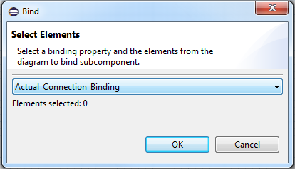

When viewing a component implementation diagram, a binding property associations can be created.
Select the diagram element for which to set the binding.
Select the Bind... button from the toolbar.

From the Bind dialog, select a binding property from the drop-down menu.
Select one or more elements from the diagram to bind to the initially selected element.
Select OK.
Right-click on the diagram element for which to set the binding.
Select Bind... from the context menu.

From the Bind dialog, select a binding property from the drop-down menu.
Select one or more elements from the diagram to bind to the initially selected element.
Select OK.
The Properties view can be used to customize which bindings are shown in a diagram. By default, all supported bindings are displayed.
Left-click the empty space outside of the elements in a diagram.
In the Properties view, select the Bindings tab.
Select the checkboxes to configure which bindings to show.